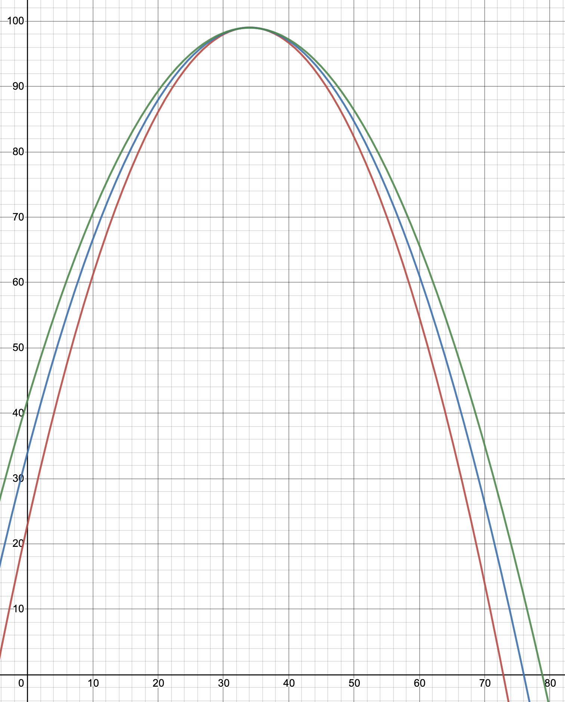
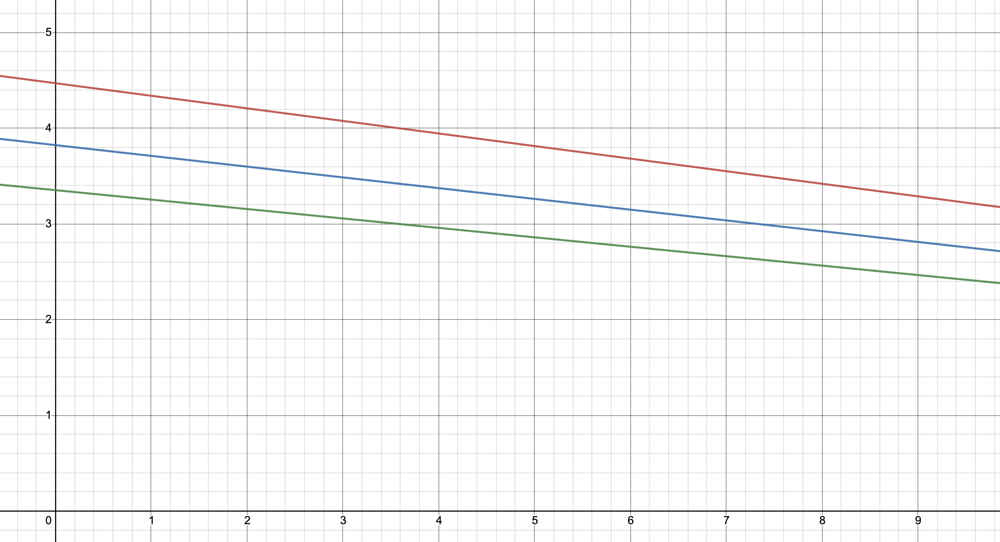
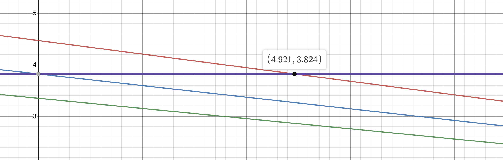
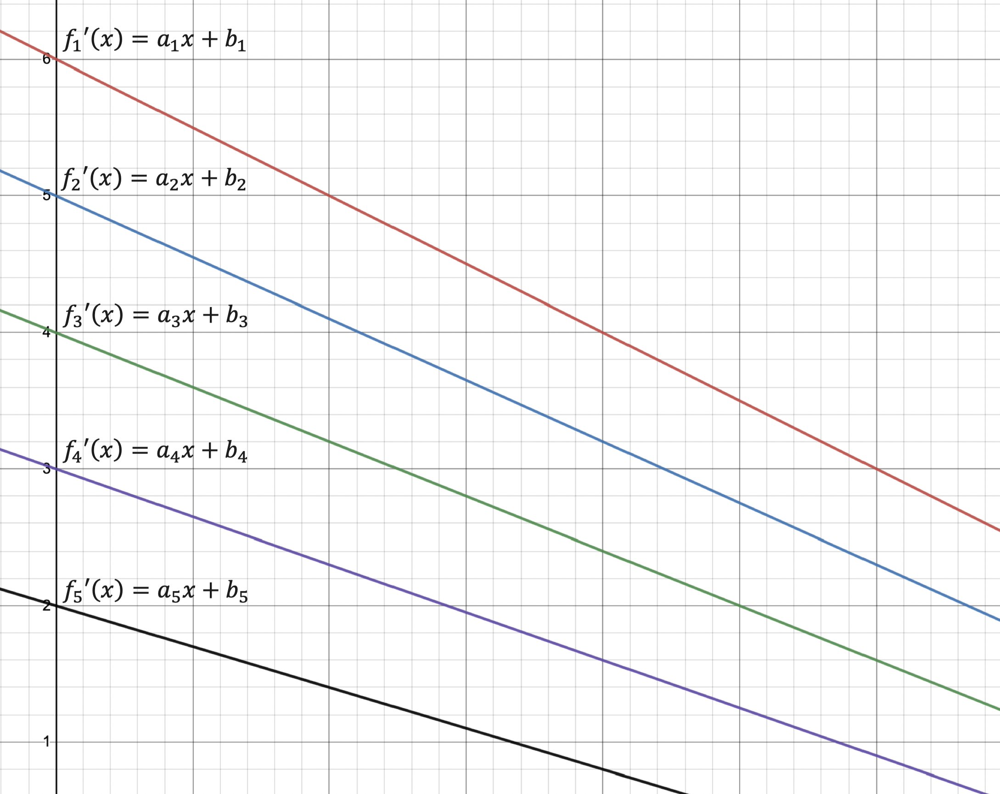
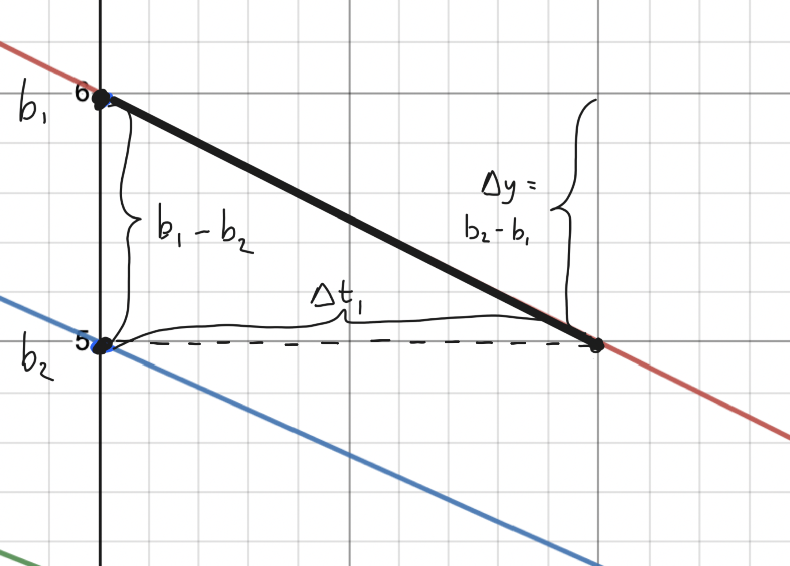
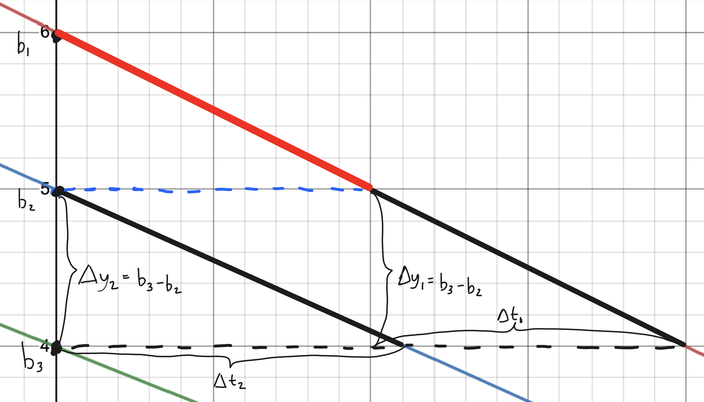
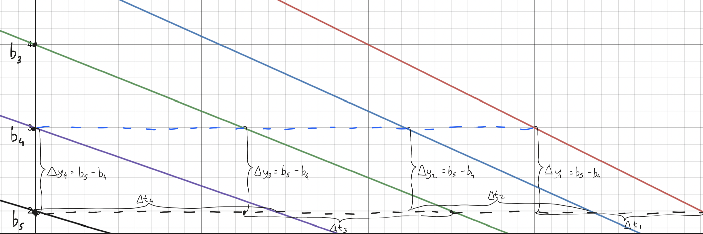
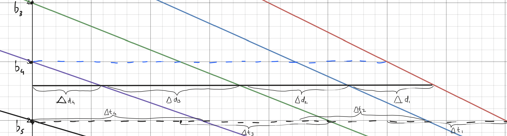
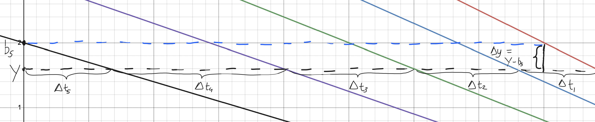

Studying for exams (Kattis problem)
Problem description:
You are taking \(N\) exams, with \(T\) total hours to study. For each subject \(i\) (from 1-\(N\)), you're given the function \(f_i(t) = a_{i}t^{2} + b_{i}t + c_{i}\), which outputs an exam score from 0-100, where the input \(t\) is the amount of hours studied for this test.
From the total time \(T\) given, you're given the task of alotting a certain time to each exam in order to maximize the average exam scores of all \(N\) exams.
Note that the functions \(f_i(t)\) are non-decreasing on the interval \([0, T]\), and that fractions of hours can be alotted to each subject; it doesn't have to be whole hours.
The inputs are given by this format: the first line contains the integers \(N\) and \(T\) separated by a space, with \(N\) being anywhere between 1-10 (inclusive) and \(T\) being anywhere between 1-240 (inclusive) Each consecutive \(N\) lines (one for each subject 1 through \(N\)) has 3 numbers, \(a_i\), \(b_i\), and \(c_i\), corresponding to the function \(f_i(t)\). Here's a sample input:
3 34 #3 subjects with 34 total hours
-0.0657 4.4706 23.0000 #f1 (describes quadratic)
-0.0562 3.8235 34.0000 #f2 (describes quadratic)
-0.0493 3.3529 42.0000 #f3 (describes quadratic)
So what's the key here? Why can't we just allocate the same amount of time (\(T/N\)) to each exam?
Hypothetical case: 2 exams
Well, if you have 2 exams and 4 hours to distribute within them, you could get the average of \(f_1(2)\) and \(f_2(2)\), and that would be your final answer. But what if the average of \(f_1(1.9)\) and \(f_2(2.1)\) is greater? And how would we know that?
Let's say you've given 1.9 hours to each subject, and you have 0.2 more to distribute. And you're given the functions as well, which means you know the values to each of these sets of data points (which are completely made up):
| Table 1 | \(f_1(t)\) | \(f_2(t)\) |
|---|---|---|
| \(t = 1.9\) | 20 | 20 |
| \(t = 2.0\) | 21 | 25 |
| \(t = 2.1\) | 22 | 30 |
| Table 2 | \(f_1(t)\) | \(f_2(t)\) |
|---|---|---|
| \(t = 1.9\) | 20 | 20 |
| \(t = 2.0\) | 23 | 25 |
| \(t = 2.1\) | 24 | 26 |
Table 1
Let's start from \(t=1.9\), that is, we have already alotted 1.9 hours to each exam. Now we increment by 0.1 in each function to see which one gives us the greatest "change" in our score. Exam 1's score increases by 1%, whereas Exam 2's score increases by 5%. Therefore, we spend that 0.1 hour into studying for the second exam, as this gives us the greatest score increase.
So as of right now, we have given 1.9 hours into studying for Exam 1, and 2.0 hours for Exam 2. Now the next 0.1 hour increment gives us a difference of \(f_1(2.0)-f_1(1.9)\), or 1% for exam 1, and a difference of \(f_2(2.1)-f_2(2.0)\), or 5% for exam 2. (Remember, we're still on 1.9 hours for exam 1 and on 2.0 hours for exam 2). Exam 2 still shows a higher score increase, which means the next 0.1 hours will be given to Exam 2 again! Now we have 2.1 hours for Exam 2.
We've now used up all 4 of our hours. We can now calculate the average score between the 2 exams, which is \(\frac{f_1(1.9)+f_2(2.1)}{2} = \frac{30+20}{2} = 25\)%.
Table 2
Again, for this example, we start from \(t=1.9\) for both \(f_1\) and \(f_2\). Incrementing by 0.1 for step 1, we get \(\Delta f_1 = f_1(2.0) - f_1(1.9) = 3\), and \(\Delta f_2 = f_2(2.0) - f_2(1.9) = 5\). Again, f_2 shows a greater score increase, so we give that 0.1 hour into studying for Exam 2.
Now for step 2, keep in mind we're at 1.9 hours for Exam 1 and 2.0 hours for Exam 2. That means for the second step, \(\Delta f_1 = f_1(2.0) - f_1(1.9) = 3\), and \(\Delta f_2 = f_2(2.1) - f_2(2.0) = 1\). Now f_1 shows a greater score increase, so we give that 0.1 hour to Exam 1.
We've run out of our 4 hours again. Now our average score is \(\frac{f_1(2.0)+f_2(2.0)}{2} = \frac{23+25}{2} = 24\)%.
The problem is that there are infinite degrees of precision for the "most correct" answer possible. The optimal score average can be the average of \(f_1(1.986415)\) and \(f_2(2.013585)\). But are we really going to start from \(f_1(0)\) and \(f_2(0)\) and go up by increments of 0.000001 hours? An increment of 4 milliseconds isn't doing anything to my grades. But we still want as precise of an answer as possible, in the most computationally efficient way possible.
So let's go back to the sample input with 3 exams, and start with \(t=0\) for all equations. Now instead of calculating \(f(0.000000000001)\) for all 3 functions, we can simply find the rate of change of each function, \(f_1, f_2, f_3\) by calculating their derivatives.
Recall that \(f_i(t) = a_{i}t^{2} + b_{i}t + c_{i}\), which means \(\frac{df_i}{dt} = 2a_i + b_i\) for all \(i\) from 1-\(N\) (or in this case, 1-3).
Here's how the \(f_i(t)\) and \(f_i'(t)\) graphs look:


Note that the red function is \(f_1\), blue is \(f_2\), and green is \(f_3\); the colors apply for \(f_1'\), \(f_2'\), and \(f_3'\) respectively.
Let's make the initial code changes.
line_one = input().split()
num_exams = int(line_one[0]) #N: first number
total_hours = int(line_one[1]) #T: second number
hours_used = 0 #defined this to keep track of how many hours have been alotted
exams = []
for i in range(num_exams):
f = input().split() #all the lines describing a, b, and c are retrieved.
#this loop will run num_exams number of times: one function for each exam.
exams.append([2*float(f[0]), float(f[1]), float(f[2]), 0])
#each exam is a list that looks like this:
#[2a, b, c, 0], where 2a and b are the terms for the derivative, and c is the y-intercept of the function.
#the last value (0 for now) is just to keep track of how many hours have been alotted to that specific exam.
This is how the exams variable looks after the sample data is run:
[
[-0.1314, 4.4706, 23.0, 0],
[-0.1124, 3.8235, 34.0, 0],
[-0.0986, 3.3529, 42.0, 0]
]
The first exam that we start alotting time to is the one that has the highest rate of change at \(t=0\), which is \(a_i t + b_i = a_i * 0 + b_i= b_i\)
So let's sort all the exams by \(b_i\) in descending order.
exams.sort(key=lambda x: x[1], reverse=True) #sorts each exam by the 2nd item in each exam list (which is the b value), descending
Now that we've sorted it, \(f_1\) will have the highest score change, \(f_1\) will have the second highest, and so on.
Based on the 2-exam example that we did, we keep adding time to \(f_1\) until the rate of change of \(f_2\) (that is, \(a_2 t + b_2\)) is greater than the rate of change of \(f_1\).

The red graph, \(f_1'(t)\), equals \(f_2'(0)\) at \(t=4.921\). Remember, we're plugging in 0 into \(f_2'(t)\), because we haven't added any hours to Exam 2 yet. This means that as of right now, we aren't studying for Exam 2 at all - which is why we're calculating the derivative at \(t=0\). We want to see what kind of a change adding a small amount of study time to Exam 2 would do, if we are currently spending 0 hours studying for it.
Now we have \(t=4.921\) hours studied for Exam 1, and 0 hours studied for Exams 2 and 3. At this point, \(f_1'(t)\) and \(f_2'(t)\) are equal.
Notice that if we add a tiny amount to Exam 1, \(f_1'(t) < f_2'(t)\), and if we add any time to Exam 2, \(f_2'(t) < f_1'(t)\). As soon as one is greater than another, we want to add more time to it until it's not the higest anymore. So if \(f_2'(t) > f_1'(t)\), we'll keep adding to Exam 2 until \(f_2'(t) = f_1'(t)\). Now we can add 0.0001 hours to Exam 1, then add more time to Exam 2 so that \(f_2'(t) = f_1'(t)\), then add 0.0001 more to Exam 1, and so on. (remember, adding the same amount of hours to each graph doesn't guarantee \(f_2'(t) = f_1'(t)\), because they have different slopes).
This is a horrible idea. Instead, we can add to both at once; we need to figure out by how much we need to add so that \(f_2'(t) = f_1'(t)\).
What if we have 5 different exams? We need to keep using up our "hours" so that \(f_1'(t) = f_2'(t) = f_3'(t) = f_4'(t) = f_5'(t)\). Let's think of a hypothetical scenario in which we have 5 different functions \(f_1(t)\) through \(f_2(t)\), and their respective derivative functions \(f_1'(t)\) through \(f_2'(t)\) that look like this:
Hypothetical case: 5 exams

Remember, we sorted all our exams with respect to the \(b\) variable, which means our derivative graphs are automatically going to be formatted by y-intercepts.
Step 1
Now our first step is to add hours to Exam 1 until \(f_1'(t) = f_2'(t)\).

The dark black line indicates the newly added hours to Exam 1, and the dotted line indicates the next y-position that we will be "stepping" to (\(b-2\)) (Remember that the change in the y component is \(y_{final} - y_{initial}\), not the other way around, which is why it's \(b_2 - b_1\)).
\[a_1 * \Delta t_1 = \Delta y = b_2 - b_1\]
\[ \Delta t_1 = \frac{b_2 - b_1}{a_1} \]
So we know that we need to add \(\Delta t_1\), or \(\frac{b_2 - b_1}{a_1}\) hours to Exam 1.
At this point in time, \(f_1'(t) = f_2'(t) = b_2\), after alotting \(\frac{b_2 - b_1}{a_1}\) hours to exam 1. We're at the dotted line, and we keep moving this dotted line downwards (by adding more hours to the Exams) until we reach the next y-intercept.
Step 2
Our next step is to now add hours to both Exam 1 and Exam 2 until we reach \(b_3\), or the y-intercept of \(f_3'(t)\). At this point, \(f_1'(t) = f_2'(t) = f_3'(t) = b_3\). Let's work out the math for this.

Now when we shift the dotted line down one more "step", it gets interesting.
The black dotted line is the "next step", and the blue dotted line is the "current step".
\[a_1 * \Delta t_1 = \Delta y_1 = b_3 - b_2 \hspace {2cm} a_2 * \Delta t_2 = \Delta y_2 = b_3 - b_2\]
\[ \Delta t_1 = \frac{b_3- b_2}{a_1} \hspace{2cm} \Delta t_2 = \frac{b_3- b_2}{a_2} \]
This shows us that when we shift from the red to the black line, we add \(\frac{b_3- b_2}{a_1}\) hours to Exam 1 (which already has \(\frac{b_2 - b_1}{a_1}\) hours), and \(\frac{b_3- b_2}{a_2}\) hours to exam 2.
Step 4: Adding time to Exams 1-4
Let's skip step 3 and go directly to step 4, where \(f_1'(t) = f_2'(t) = f_3'(t) = f_4'(t) = f_5'(t)\). At this point in time, the blue dotted line (the "current" step) shows that we've added time to Exam 1, 2, and 3, and the final step (step 4) will add time to Exam 4.

The \(\Delta t\) and \(\Delta y\) values for each line are the change from the blue dotted line to the black dotted line. \(\Delta y_{i} = b_5 - b_4\) for all \(i\) (from 1-5).
\[a_i * \Delta t_i = \Delta y_i = b_5 - b_4\]
\[ \Delta t_i = \frac{b_5 - b_4}{a_i}\]
Notice a pattern in each "step" we take?
In steps 1-4, each step adds time to the same exam number as the step, and all exams preceding it.
For example, step 1 only added time to Exam 1, step 2 added time to Exam 1 and Exam 2, and so on, until step 4 added time to Exams 1, 2, 3, and 4.
Let's assign the variable \(s\) to the step number (1-4) and \(i\) for the exam number that we're concerned about. For every "step" we take, we add \(\Delta t_i\) number of hours to exams \(1, 2, 3, ... ,s\). This gives us:
\[ \Delta t_i = \frac{b_{s+1} - b_s}{a_i}\]
So let's go through it step by step. See how the formula above applies to each step.
Step 1
\[ \Delta t_1 = \frac{b_2 - b_1}{a_1}\]
Step 2
\[ \Delta t_1 = \frac{b_3 - b_2}{a_1} \hspace{2cm} \Delta t_2 = \frac{b_3 - b_2}{a_2}\]
Step 3
\[ \Delta t_1 = \frac{b_4 - b_3}{a_1} \hspace{2cm} \Delta t_2 = \frac{b_4 - b_3}{a_2} \hspace{2cm} \Delta t_3 = \frac{b_4 - b_3}{a_3}\]
Step 4
\[ \Delta t_1 = \frac{b_5 - b_4}{a_1} \hspace{2cm} \Delta t_2 = \frac{b_5 - b_4}{a_2} \hspace{2cm} \Delta t_3 = \frac{b_5 - b_4}{a_3} \hspace{2cm} \Delta t_4 = \frac{b_5 - b_4}{a_4}\]
Now let's add this into our code.
Note that in the code, \(s\) and \(i\) go from \(0\) to \(N-1\) instead of \(1\) to \(N\) as shown in the math above, in order to account for list indices. The formula for \(\Delta t_i\) per step still remains the same - just keep in mind that it starts at 0.
line_one = input().split()
num_exams = int(line_one[0])
total_hours = int(line_one[1])
hours_used = 0
exams = []
for i in range(num_exams):
f = input().split()
exams.append([2*float(f[0]), float(f[1]), float(f[2]), 0])
exams.sort(key=lambda x: x[1], reverse=True)
step = 0 #step variable is 0, not 1, to account for list indices
current_pos = exams[0][1] #initial y-value is at b_1. We slowly go downward to b_2, b_3, etc.
while(True): #while loop is made to iterate easily - we'll see this later
if step < len(exams) - 1: #ex. maximum step is 3 if len(exams) is 5. Checks to see if step is a valid number
tot_step_time = 0 #keeps track of total time added to get to the next step (adds up all delta t's)
for i in range(step + 1): #ex. if at step 3, only exams 0, 1, 2, and 3 are added time to
tot_step_time += (exams[step + 1][1] - current_pos) / (exams[i][0])
#time isn't added directly to the exam for a problem we'll encounter later on.
#this is the same formula as before, except for current_pos, which is updated every iteration
step += 1 #updates step number
current_pos = exams[step][1] #updates current y-value (blue dotted line) to the next step
Let's say we're on step 3, and we're adding \( \Delta t_1\), \( \Delta t_2\), and \( \Delta t_3\) to Exam 1, 2, and 3 respectively. What if, after step 2, we're only left with 10 hours to study, and step 3 adds 15 more?
In that case, we can't complete the step the whole way. We'd have to stop it midway - just enough to allocate a total of 10 hours to each of the 3 exams.

\( \Delta t_1 + \Delta t_2 + \Delta t_3 + \Delta t_4\) = tot_step_time in the code snippet. In other words, the total time added to all the exams in that step are added up to that variable, for each step.
For the purpose of calculation, let's say \(\Delta T\) is the total time added for that step (\( \Delta t_1 + \Delta t_2 + \Delta t_3 + \Delta t_4\)), and \(R\) is the time remaining. If \(R \geq \Delta T\), then we're fine; there's enough time to allocate to complete the step.
If, however, \(R < \Delta T\), then we have a problem. Our \(\Delta T\)s need to be shrunk by some factor \(k\) in order to be able to fit enough hours. Let's name these new time differentials \(\Delta d_1\) through \(\Delta d_4\).
Keep in mind that the ratios of \(\frac{\Delta t_i}{\Delta d_i}\) have to match for all \(i\), so that we'll end up with the same y-value for \(f_1'(t)\) through \(f_4'(t)\).
Here's what we know:
\[\Delta t_1 + \Delta t_2 + \Delta t_3 + \Delta t_4 = \Delta T\] \[\Delta d_1 + \Delta d_2 + \Delta d_3 + \Delta d_4 = k(\Delta t_1 + \Delta t_2 + \Delta t_3 + \Delta t_4) = R\] Plugging in the appropriate values we get: \[k \Delta T = R \hspace{2cm} k = \frac{R}{\Delta T}\] So we can conclude that we can multiply each of the \(\Delta t_1\) through \(\Delta t_4\) values by \(\frac{R}{\Delta T}\), or the remaining time divided by the total time added for that step, gives us \(\Delta d_1\) through \(\Delta d_4\).
So now we have 2 scenarios: one for when we have enough time (\(R \geq \Delta T\)), and one for when we don't (\(R < \Delta T)\)
Scenario 1: we have enough time
We simply add \(\Delta t_1\) through \(\Delta t_4\) to their appropriate exams, which is exams[0][3] through exams[3][3] (again, in the code, it goes from 0-3, not 1-4). Recall that the each list inside exams resembles the format [2a, b, c, hoursgiven], which means that index 3 of this list is the amount of hours alotted to that specific exam.
Then, we move on to the next step of the graph, because we assume that we still have time remaining.
Scenario 2: we don't have enough time
We can't put in \(\Delta T\) hours in, because that's too much more than what we're given. Instead, we add \(\Delta d_1\) through \(\Delta d_4\) to their appropriate exams, which is exams[0][3] through exams[3][3]. We can calculate each \(\Delta d_i\) by multipling each \(\Delta t_i\) by \(\frac{R}{\Delta T}\).
After we add these hours in, we're done - we have no more hours left to add.
Code for scenarios 1+2
line_one = input().split()
num_exams = int(line_one[0])
total_hours = int(line_one[1])
hours_used = 0
exams = []
for i in range(num_exams):
f = input().split()
exams.append([2*float(f[0]), float(f[1]), float(f[2]), 0])
exams.sort(key=lambda x: x[1], reverse=True)
step = 0
current_pos = exams[0][1]
while(True):
if step < len(exams) - 1:
tot_step_time = 0
delta_t_list = [] #list of all the delta t's. Storing these to create delta d's later
for i in range(step + 1):
delta_t_list.append((exams[step + 1][1] - current_pos) / (exams[i][0]))
#adding each individual delta t to the list
tot_step_time = sum(delta_t_list) #sums up all delta t's to create delta T, or total time added for the step
if tot_step_time > (total_hours - hours_used): #SCENARIO 2: total time for step > remaining time
hours_remaining = total_hours - hours_used
k = hours_remaining / tot_step_time #calculates k constant
for i in range(step + 1): #ex. if at step 3, then only exams 0, 1, 2, and 3 are added time to
exams[i][3] += k * delta_t_list[i] #delta d (or k * delta t) is added to each exam for this step
hours_used = total_hours #we've now used up all the hours
break #breaks out of the loop because we're done with the program
else: #SCENARIO 1: total time for step <= remaining time
for i in range(step + 1):
exams[i][3] += delta_t_list[i] #delta t is added to each exam for this step. The step is completed fully
hours_used += tot_step_time #hours used increases by the total time added for this step
step += 1
current_pos = exams[step][1]
Now there's one last case we need to account for, which is when we have finished step 4 in the example above and we still have more hours left to allocate. This is the final step.

We know that for each \(i\) from 1 through 5, \[a_i * \Delta t_i = \Delta y_i = Y - b_5\]
But in this case, our unknown is \(Y\), and we know that all the \(\Delta t\)s should add up to \(\Delta t_1 + \Delta t_2 + \Delta t_3 + \Delta t_4 + \Delta t_5 = R\), which is the total time remaining. In other words, we exhaust all our remaining time into all 5 functions \(f_1'(t)\) through \(f_5'(t)\), keeping the y-values equal so we can maximize our average score.
\[a_1 * \Delta t_1 = a_2 * \Delta t_2 = a_3 * \Delta t_3 = a_4 * \Delta t_4 = a_5 * \Delta t_5 = Y - b_5\]
\[\Delta t_1 = \frac{Y - b_5}{a_1} \hspace{2cm} \Delta t_2 = \frac{Y - b_5}{a_2} \hspace{2cm} \Delta t_3 = \frac{Y - b_5}{a_3} \hspace{2cm} \Delta t_4 = \frac{Y - b_5}{a_4} \hspace{2cm} \Delta t_5 = \frac{Y - b_5}{a_5}\]
\[R = \Delta t_1 + \Delta t_2 + \Delta t_3 + \Delta t_4 + \Delta t_5\]
\[R = \frac{Y - b_5}{a_1} + \frac{Y - b_5}{a_2} + \frac{Y - b_5}{a_3} + \frac{Y - b_5}{a_4} + \frac{Y - b_5}{a_5}\]
\[R = (\frac{1}{a_1} + \frac{1}{a_2} + \frac{1}{a_3} + \frac{1}{a_4} + \frac{1}{a_5})(Y-b_5)\]
\[Y-b_5 = \frac{R}{\frac{1}{a_1} + \frac{1}{a_2} + \frac{1}{a_3} + \frac{1}{a_4} + \frac{1}{a_5}}\]
\[Y = \frac{R}{\frac{1}{a_1} + \frac{1}{a_2} + \frac{1}{a_3} + \frac{1}{a_4} + \frac{1}{a_5}} + b_5\]
\[\Delta t_1 = \frac{Y - b_5}{a_1} = \frac{R}{\frac{1}{a_1} + \frac{1}{a_2} + \frac{1}{a_3} + \frac{1}{a_4} + \frac{1}{a_5}} * \frac{1}{a_1} = \frac{R}{1 + \frac{a_1}{a_2} + \frac{a_1}{a_3} + \frac{a_1}{a_4} + \frac{a_1}{a_5}}\]
Since this final step adds time to every single function \(f_1(t)\) through \(f_N(t)\), we can generalize each \(\Delta t_i\), with each \(i\) from \(1\) to \(N\) (the total number of exams).
\[\Delta t_i = \frac{R}{\frac{a_i}{a_1} + \frac{a_i}{a_2} + ... + \frac{a_i}{a_{N-1}} + \frac{a_i}{a_N}}\]
Let's make the final code changes. The final step is taken when if step < len(exams) - 1 is false. For example, if we have 5 exams and the code is running step number 4 (which is the 5th step, accounting for index 0), we're at the last step.
line_one = input().split()
num_exams = int(line_one[0])
total_hours = int(line_one[1])
hours_used = 0
exams = []
for i in range(num_exams):
f = input().split()
exams.append([2*float(f[0]), float(f[1]), float(f[2]), 0])
exams.sort(key=lambda x: x[1], reverse=True)
step = 0
current_pos = exams[0][1]
while(True):
if step < len(exams) - 1:
tot_step_time = 0
delta_t_list = []
for i in range(step + 1):
delta_t_list.append((exams[step + 1][1] - current_pos) / (exams[i][0]))
tot_step_time = sum(delta_t_list)
if tot_step_time > (total_hours - hours_used):
hours_remaining = total_hours - hours_used
k = hours_remaining / tot_step_time
for i in range(step + 1):
exams[i][3] += k * delta_t_list[i]
hours_used = total_hours
break
else:
for i in range(step + 1):
exams[i][3] += delta_t_list[i]
hours_used += tot_step_time
step += 1
current_pos = exams[step][1]
else: #when the first if statement is false, we know we're on the last step
hours_remaining = total_hours - hours_used
for exam in range(step + 1): #each iteration of exam calculates delta t for each exam
denominator = 0
for e in range(step + 1):
denominator += exams[exam][0] / exams[e][0] #adds each (a_i / a_e) term to the denominator variable
exams[exam][3] += hours_remaining / denominator #final delta t value is (R / denominator), which is simply added to the hours added
break #we're done with the program at this point - all the hours have been used up.
Now all we have left to do is calculate the final answer. Remember, the answer to be outputted is the average of all exam scores (each exam \(i\) from 1 through \(N\)), where \(f_i(t)\) is the function that gives the exam score, and exams[i - 1][3] gives the number of hours for that exam.
\(f_i(t) = a_i t^{2} + b_i + c_i\), and exams[i - 1][0] = \(2a_i\), exams[i - 1][1] = \(b_i\), and exams[i - 1][2] = \(c_i\)
So here's the code to add up all the exam scores and average them.
total_score = 0 #adds up all the scores
for e in range(len(exams)):
total_score += (exams[e][0] / 2) * (exams[e][3] ** 2) + (exams[e][1] * exams[e][3]) + exams[e][2]
# a * t^2 + b * t + c
#at^2 + bt + c
#remember, exams[e][0] = 2a; therefore a = exams[e][0]/2 = a
print(total_score / len(exams)) #final answer: average of all scores
And we're done!
Final code
line_one = input().split()
num_exams = int(line_one[0])
total_hours = int(line_one[1])
hours_used = 0
exams = []
for i in range(num_exams):
f = input().split()
exams.append([2*float(f[0]), float(f[1]), float(f[2]), 0])
exams.sort(key=lambda x: x[1], reverse=True)
step = 0
current_pos = exams[0][1]
while(True):
if step < len(exams) - 1:
tot_step_time = 0
delta_t_list = []
for i in range(step + 1):
delta_t_list.append((exams[step + 1][1] - current_pos) / (exams[i][0]))
tot_step_time = sum(delta_t_list)
if tot_step_time > (total_hours - hours_used):
hours_remaining = total_hours - hours_used
k = hours_remaining / tot_step_time
for i in range(step + 1):
exams[i][3] += k * delta_t_list[i]
hours_used = total_hours
break
else:
for i in range(step + 1):
exams[i][3] += delta_t_list[i]
hours_used += tot_step_time
step += 1
current_pos = exams[step][1]
else:
hours_remaining = total_hours - hours_used
for exam in range(step + 1):
denominator = 0
for e in range(step + 1):
denominator += exams[exam][0] / exams[e][0]
exams[exam][3] += hours_remaining / denominator
break
total_score = 0
for e in range(len(exams)):
total_score += (exams[e][0] / 2) * (exams[e][3] ** 2) + (exams[e][1] * exams[e][3]) + exams[e][2]
print(total_score / len(exams))